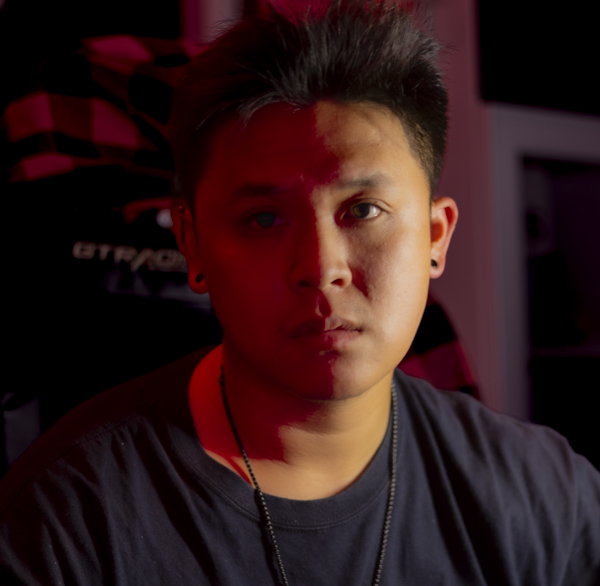

About Me

Salutations! I guess this is where I go on a little bit about myself. I have a passion for expression in art. Since childhood, I have drawn for as long as I remember, every emotion I have felt has been expressed artistically in one way or another. That said, I found fulfillment in embracing new forms of art unfamiliar to me. Lately, I have been doing photography and photo editing as a hobby along with enjoying the usual indulgences life has to offer.
Fundamentally, I believe artistic expression is truly a free way of expressing inner emotions so long as said inner emotions bear no hold on your artistic expression.
Contact Information
Email: brandon.vuong@sjsu.edu